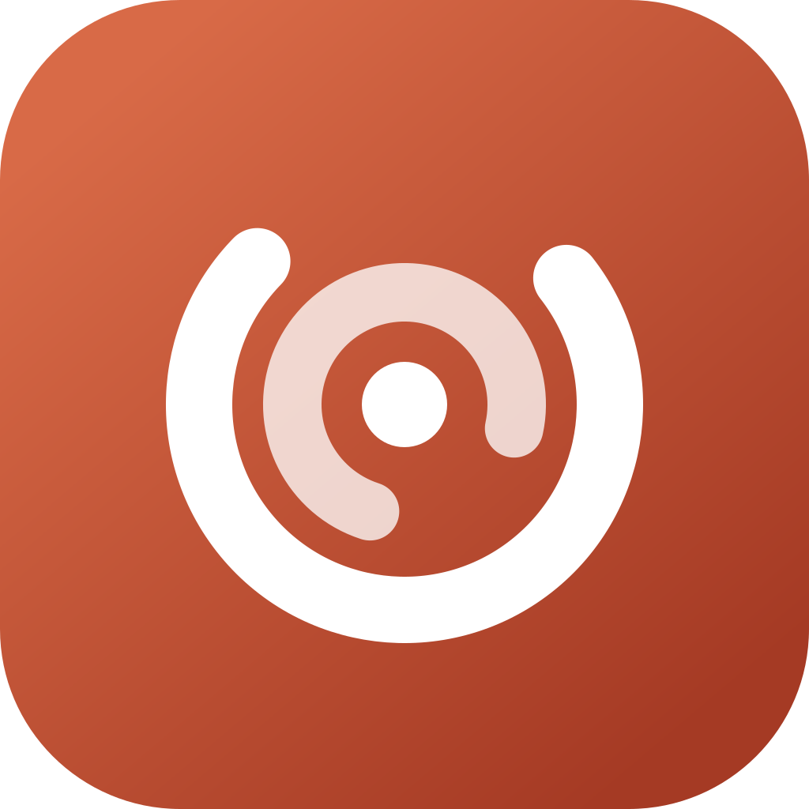
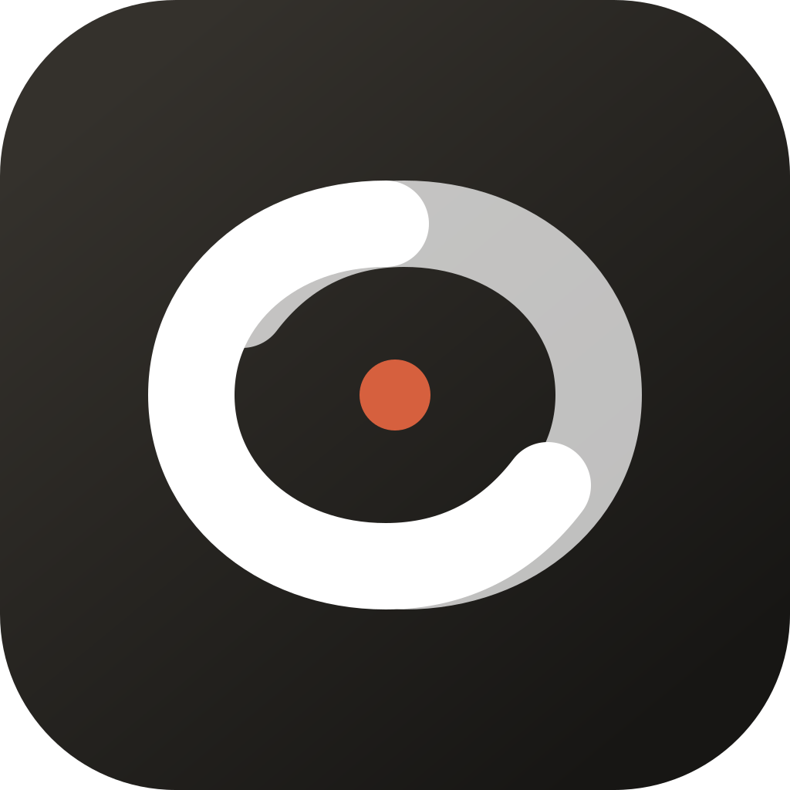
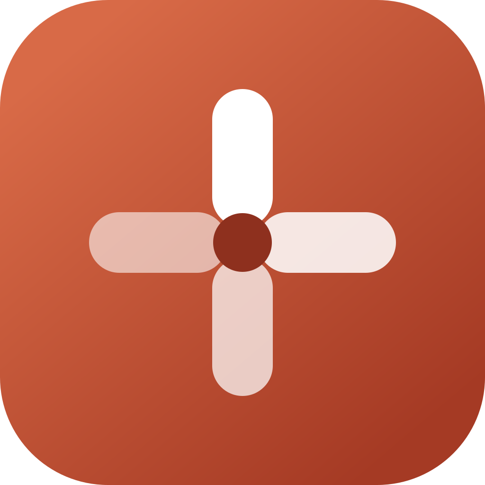

Kernel
RecommendedSystem layers orbit one personal core. Calm motion, strong center, clean silhouette.
myOS
643216
Abstract system symbol. Bold and AI-native, simple and friendly.

System layers orbit one personal core. Calm motion, strong center, clean silhouette.

Human and system loops meet around an active core. Intelligent, continuous, precise.

Four modules become one operating system. Modular, approachable, visibly active.